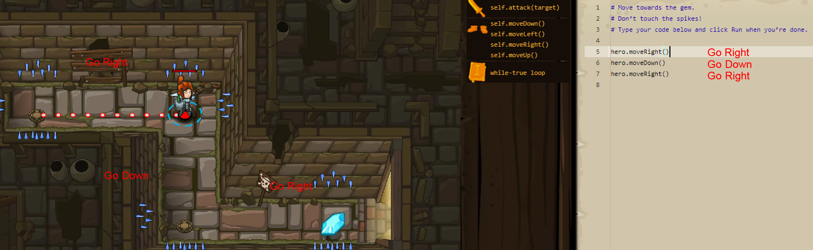
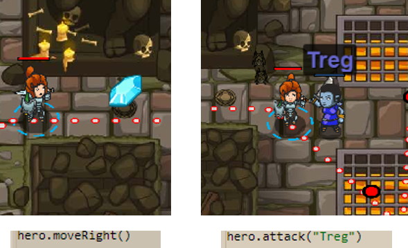
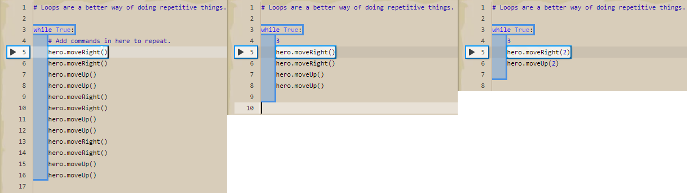
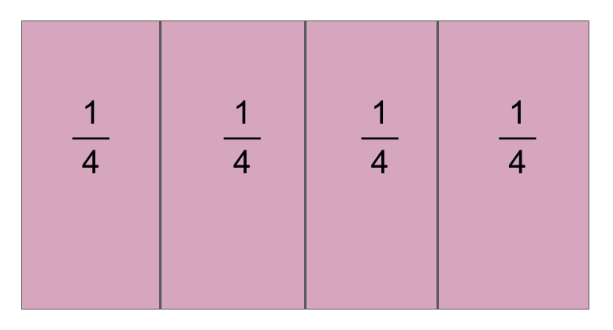
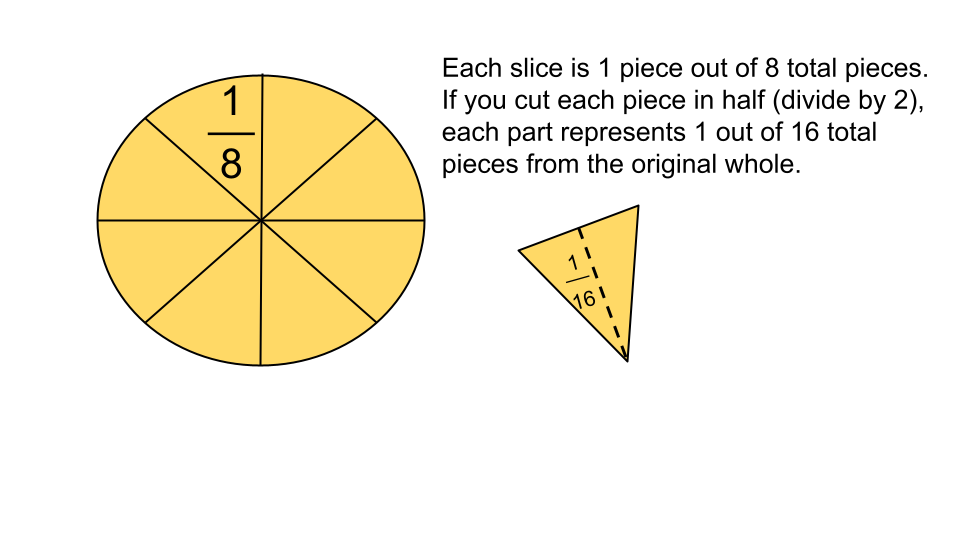
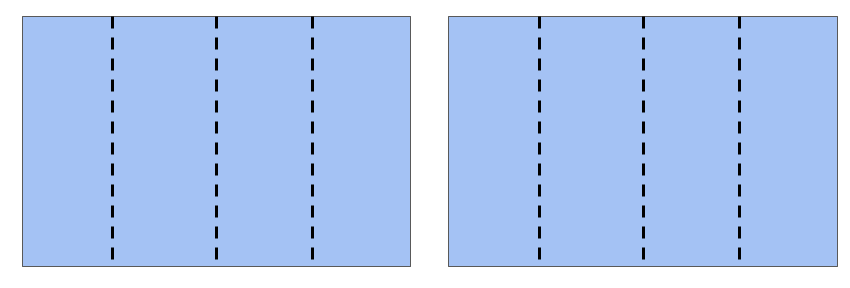

What You Should Know - Code Combat: Introduction to Python
 Important Vocabulary
Important Vocabulary
- Source Code - a language that contains numbers, symbols, and words that tell computers to do things
- Python - a script language that uses commands that are similar to the text in a book
- Method - an action your character can do with his/her gear
- Unit fraction - a fraction that has a numerator of 1 (½, ⅕, and ⅛ are examples of unit fractions)
- Quotient - the answer to a division problem (in the equation 36÷9=4, the quotient is 4)
Writing Code
Like people, computers have their own language they use to communicate. Computers use a written language called source code to work, and humans can tell computers to do things by writing source code. Source code is a language that contains numbers, symbols, and words. In Code Combat players are able to explore, learn, and practice 3 different script languages including the popular Python and JavaScript, and an experimental code called CoffeeScript.
Python Script Language
Python is one of the easiest script languages to use because it looks a lot like the text in books. Python uses commands that are easy to read and leaves spaces for comments about the code for the code writers. Python has many different commands including methods, arguments, strings, variables, and loops. Each command tells the computer to do something. In this challenge, you will program commands to help your hero avoid traps and defeat evil.
Commands
Select each item to learn more about commands.
Methods
Methods are actions your heroes can do with their gear. Your hero has feet so he can move up, down, right, or left. At the end of each method there are parentheses where an argument can go, shown in the example below.

Arguments and Strings
Arguments in Python tell the computer details about a method or action. For example, you could tell the computer to move the hero right with hero.moveRight(), or you could use an argument to be more specific about how far you want your hero to move right. You could tell the computer to move the hero one space, two spaces, or even further.
A string is a special piece of text information. To tell the computer about a string, surround text with quotation marks.
You can combine arguments and strings. If you write hero.moveRight(4), your hero will move to the right 4 spaces. In another example, you could tell the computer to have the hero attack by writing hero.attack(), if you want your hero to attack the enemy Treg, your command would be hero.attack("Treg").

Variables
Variables are symbols that represent data, but unlike arguments, variables can change. When you are fighting ogres such as Treg, it takes a long time to type in their names one by one. Imagine if you had to fight a whole army of ogres! Instead of typing their names one by one like hero.attack("Treg"), you can use variables to attack the closest ogre and then attack the next closest ogre with hero.findNearestEnemy().
Loops
Sometimes a certain piece of code needs to be repeated over and over. Maybe you need your hero to dodge a fireball or you need him to continually travel in a circle. You can use a "while-true" loop and tell the computer to repeat an action as many times as you want. In the example below, the hero needs to move through a maze with the same moves over and over. Instead of writing out each step, you can write out the series and tell the computer to repeat or loop any number of times.

Unit Fractions
We use fractions to show numbers that are part of a whole. Unit fractions are a special type of fraction. They always have a 1 in the numerator. Unit fractions show one unit, or one part of the whole.
Look at the picture below. The denominator is 4 because the whole is split into 4 equal parts.
Each piece, or unit, is 1 piece out of 4 total pieces in the whole. We write this as ¼.

Dividing with Fractions and Whole Numbers
Just like you can use division to find equal groups of whole numbers, you can also divide using fractions to find the quotient.
It is helpful to understand dividing whole numbers by fractions and dividing fractions by whole numbers in real life. Sometimes you need to split whole objects, like cookies, into fractional pieces so that you have enough to share with everyone. To do this, you would use division.
Unit Fractions Divided by Whole Numbers
You can divide a unit fraction by a whole number. In this type of problem, you are splitting a fraction into a number of pieces indicated by the whole number. A real-life example of this would be if you had leftover pizza and wanted to share it. Suppose each piece of pizza is ⅛ of a whole pizza. If you and a friend want to share one of the pieces, you can find the amount of pizza you each receive with the equation ⅛÷2 = 1/16. This means that you and your friend would each get 1 piece if the original pizza was cut into 16 pieces. Since the pieces were already cut into eighths, when you split each piece in half, 16 total pieces would be created. One piece of the pizza would be 1/16.

Whole Numbers Divided by Unit Fractions
You can also divide whole numbers by unit fractions. Let’s look at another example. Imagine that you have 2 yards of fabric. You want to create pieces of fabric that are ¼ of a yard long. How many pieces could you cut? In this division problem, you are dividing 2 yards (2 wholes) into fourths. The number of pieces that you could cut would be represented by the equation 2÷¼=8. You could cut the fabric into 8 pieces, with each one measuring a fourth of a yard.

Career Connection and Real-World Application
Tailor
Tailors, or people who adjust clothing to better fit their customers, need to understand the division of fractions and whole numbers. Tailors may need to figure out how to divide a piece of fabric that is a fraction of a yard into smaller pieces to meet the needs of their client.

Computer Programmer
Computer programmers write code to control computer. Computer programmers might need to divide fractions to help them program a game. They might program a character to move a fractional number of spaces and would need to know how many moves it will take them to get to the end of a path. They may also want to split each level of a game into fractional portions, such as stages that are each a third of the level. Dividing a whole number by a fraction would let them determine the total number of stages that there would need to be.